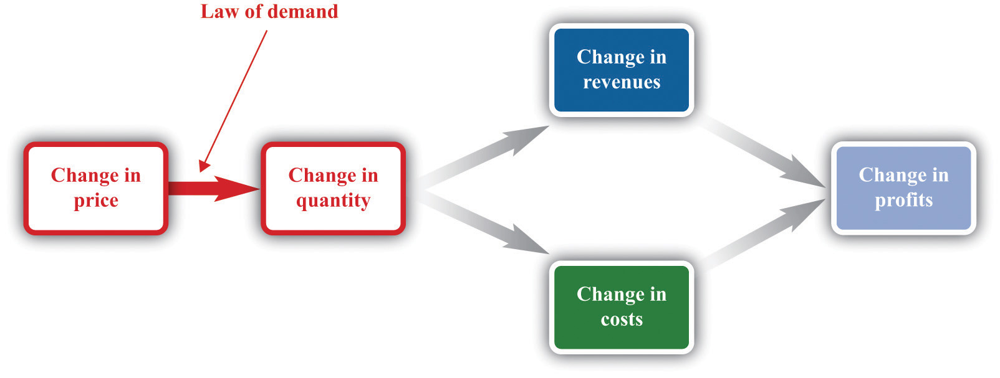
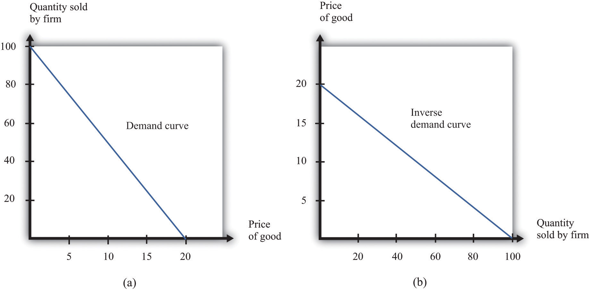
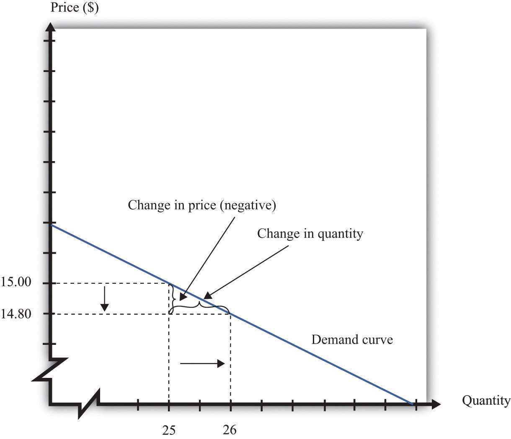
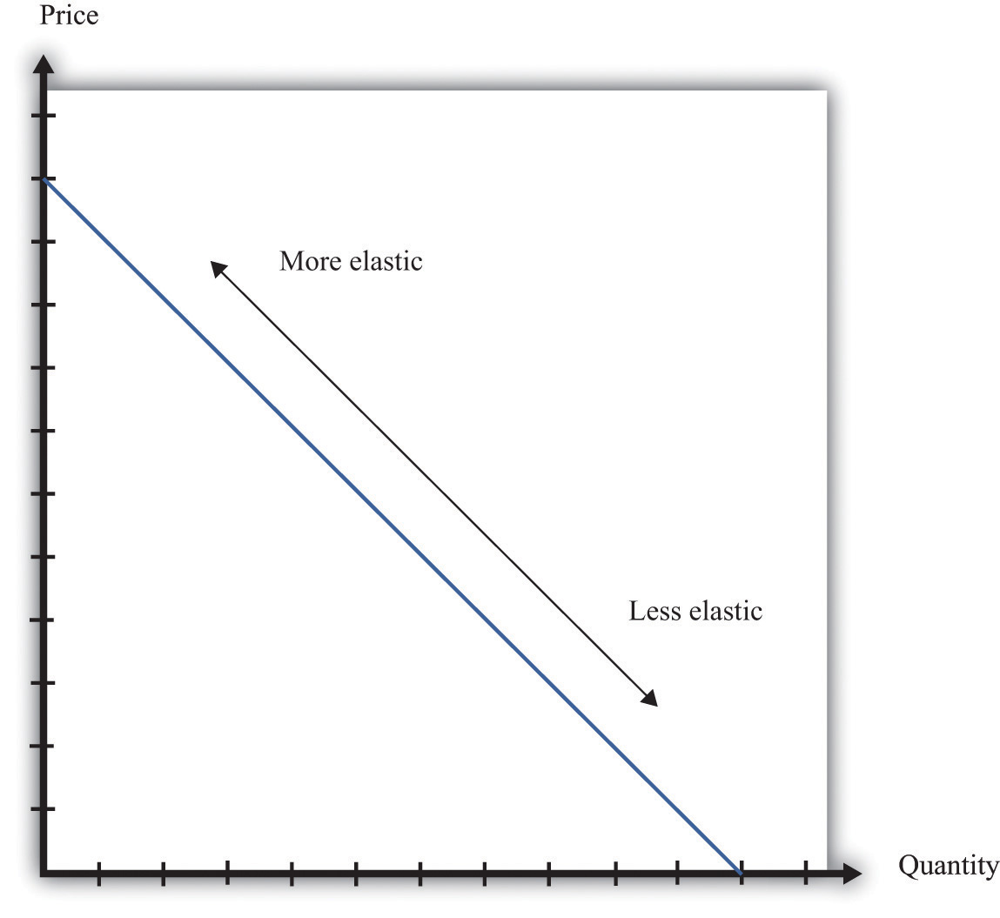
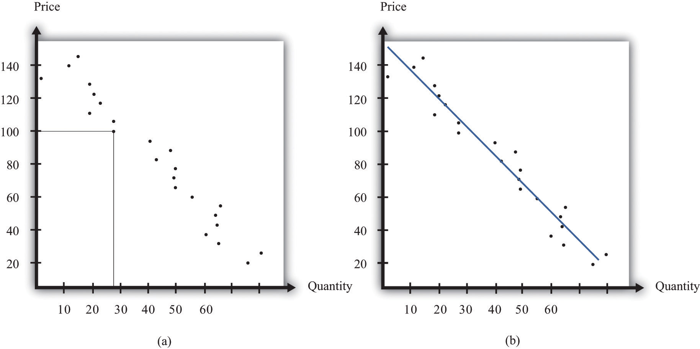
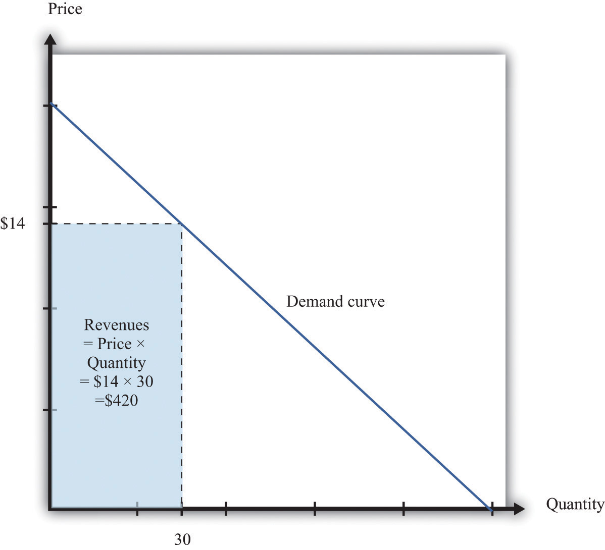
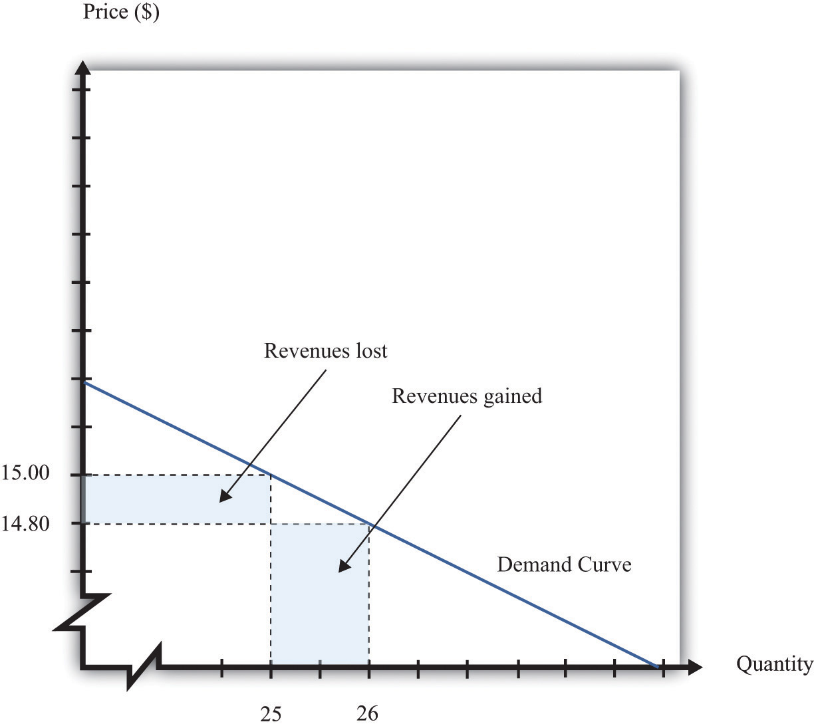
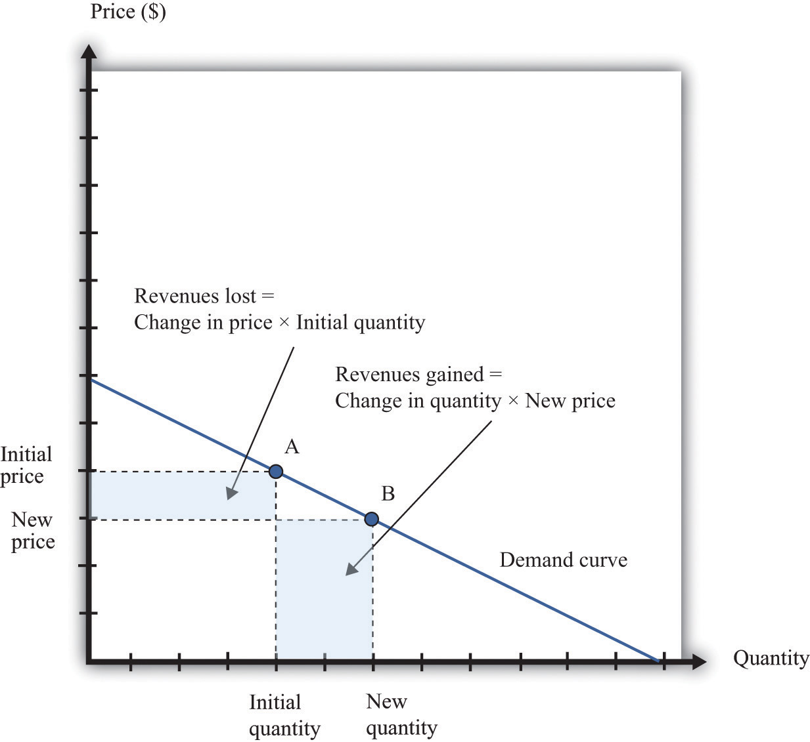
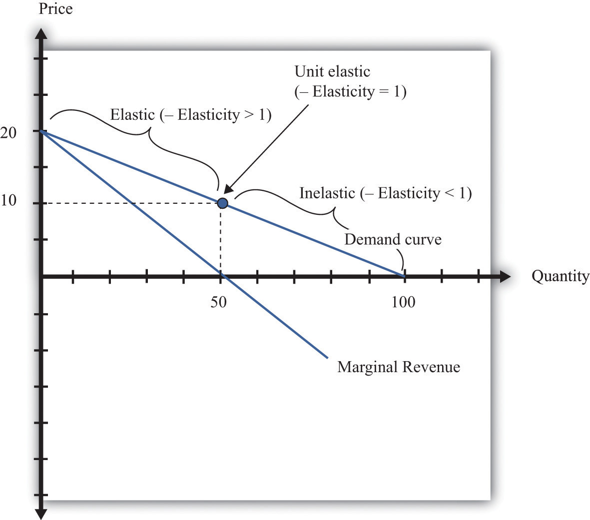

A firm’s revenues are the money that it earns from selling its product. Revenues equal the number of units that a firm sells times the price at which it sells each unit:
revenues = price × quantity.For example, think about a music store selling CDs. Suppose that the firm sells 25,000 CDs in a month at $15 each. Then its total monthly revenues are as follows:
revenues = 15 × 25,000 = $375,000.There are two ways in which firms can obtain higher revenues: sell more products or sell at a higher price. So if a firm wants to make a lot of revenue, it should sell a lot of its product at a high price. Then again, you probably do not need to study economics to figure that out. The problem for a manager is that her ability to sell a product is limited by what the market will bear. Typically, we expect that if she sets a higher price, she will not be able to sell as much of the product:
Equivalently, if she wants to sell a larger quantity of product, she will need to drop the price:
This is the law of demand in operation (Figure 7.4 "A Change in the Price Leads to a Change in Demand").
Figure 7.4 A Change in the Price Leads to a Change in Demand
An increase in price leads to a decrease in demand. A decrease in price leads to an increase in demand.
There will typically be more than one firm that serves a market. This means that the overall demand for a product is divided among the different firms in the market. We have said nothing yet about the kind of “market structure” in which a firm is operating—for example, does it have a lot of competitors or only a few competitors? Without delving into details, we cannot know exactly how the market demand curve will be divided among the firms in the market. Fortunately, we can put this problem aside—at least for this chapter.We look at market structure in Chapter 15 "Busting Up Monopolies". For the moment, it is enough just to know that each firm faces a demand curve for its own product.
When the price of a product increases, individual customers are less likely to think it is good value and are more likely to spend their income on other things instead. As a result—for almost all products—a higher price leads to lower sales.
Toolkit: Section 31.15 "Pricing with Market Power"
The demand curve facing a firm tells us the price that a firm can expect to receive for any given amount of output that it brings to market or the amount it can expect to sell for any price that it chooses to set. It represents the market opportunities of the firm.
An example of such a demand curve is
quantity demanded = 100 − (5 × price).Table 7.1 "Example of the Demand Curve Faced by a Firm" calculates the quantity associated with different prices. For example, with this demand curve, if a manager sets the price at $10, the firm will sell 50 units because 100 − (5 × 10) = 50. If a manager sets the price at $16, the firm will sell only 20 units: 100 − (5 × 16) = 20. For every $1 increase in the price, output decreases by 5 units. (We have chosen a demand curve with numbers that are easy to work with. If you think that this makes the numbers unrealistically small, think of the quantity as being measured in, say, thousands of units, so a quantity of 3 in this equation means that the firm is selling 3,000 units. Our analysis would be unchanged.)
Table 7.1 Example of the Demand Curve Faced by a Firm
| Price ($) | Quantity |
|---|---|
| 0 | 100 |
| 2 | 90 |
| 4 | 80 |
| 6 | 70 |
| 8 | 60 |
| 10 | 50 |
| 12 | 40 |
| 14 | 30 |
| 16 | 20 |
| 18 | 10 |
| 20 | 0 |
Equivalently, we could think about a manager choosing the quantity that the firm should produce, in which case she would have to accept the price implied by the demand curve. To write the demand curve this way, first divide both sides of the equation by 5 to obtain
Now add “price” to each side and subtract “” from each side:
For example, if the manager wants to sell 70 units, she will need a price of $6 (because 20 − 70/5 = 6). For every unit increase in quantity, the price decreases by 20 cents.
Either way of looking at the demand curve is perfectly correct. Figure 7.5 "Two Views of the Demand Curve" shows the demand curve in these two ways. Look carefully at the two parts of this figure and convince yourself that they are really the same—all we have done is switch the axes.
Figure 7.5 Two Views of the Demand Curve
There are two ways that we can draw a demand curve, both of which are perfectly correct. (a) The demand curve has price on the horizontal axis and quantity demanded on the vertical axis (b). The demand curve has price on the vertical axis, which is how we normally draw the demand curve in economics.
The firm faces a trade-off: it can set a high price, such as $18, but it will be able to sell only a relatively small quantity (10). Alternatively, the firm can sell a large quantity (for example, 80), but only if it is willing to accept a low price ($4). The hard choice embodied in the demand curve is perhaps the most fundamental trade-off in the world of business. Of course, if the firm sets its price too high, it won’t sell anything at all. The choke priceThe price above which no units of the good will be sold. is the price above which no units of the good will be sold. In our example, the choke price is $20; look at the vertical axis in part (b) of Figure 7.5 "Two Views of the Demand Curve".A small mathematical technicality: the equation for the demand curve applies only if both the price and the quantity are nonnegative. At any price greater than the choke price, the quantity demanded is zero, so the demand curve runs along the vertical axis. A negative price would mean a firm was paying consumers to take the product away.
Every firm in the economy faces some kind of demand curve. Knowing the demand for your product is one of the most fundamental necessities of successful business. We therefore turn next to the problem Ellie learned about the demand curve for her company’s drug.
Marketing managers understand the law of demand. They know that if they set a higher price, they can expect to sell less output. But this is not enough information for good decision making. Managers need to know whether their customers’ demand is very sensitive or relatively insensitive to changes in the price. Put differently, they need to know if the demand curve is steep (a change in price will lead to a small change in output) or flat (a change in price will lead to a big change in output). We measure this sensitivity by the own-price elasticity of demandThe percentage change in quantity demanded of a good divided by the percentage change in the price of that good..
Toolkit: Section 31.2 "Elasticity"
The own-price elasticity of demand (often simply called the elasticity of demand) measures the response of quantity demanded of a good to a change in the price of that good. Formally, it is the percentage change in the quantity demanded divided by the percentage change in the price:
When price increases (the change in the price is positive), quantity decreases (the change in the quantity is negative). The price elasticity of demand is a negative number. It is easy to get confused with negative numbers, so we instead use
which is always a positive number.
Throughout the remainder of this chapter, you will often see −(elasticity of demand). Just remember that this expression always refers to a positive number.
Go back to our earlier example:
quantity demanded = 100 − 5 × price.Suppose a firm sets a price of $15 and sells 25 units. What is the elasticity of demand if we think of a change in price from $15 to $14.80? In this case, the change in the price is −0.2, and the change in the quantity is 1. Thus we calculate the elasticity of demand as follows:
The interpretation of this elasticity is as follows: when price decreases by 1 percent, quantity demanded increases by 3 percent. This is illustrated in Figure 7.6 "The Elasticity of Demand".
Figure 7.6 The Elasticity of Demand
When the price is decreased from $15.00 to $14.80, sales increase from 25 to 26. The percentage change in price is −1.3 percent. The percentage change in the quantity sold is 4. So −(elasticity of demand) is 3.
One very useful feature of the elasticity of demand is that it does not change when the number of units changes. Suppose that instead of measuring prices in dollars, we measure them in cents. In that case our demand curve becomes
quantity demanded = 100 − 500 × price.Make sure you understand that this is exactly the same demand curve as before. Here the slope of the demand curve is −500 instead of −5. Looking back at the formula for elasticity, you see that the change in the price is 100 times greater, but the price itself is 100 times greater as well. The percentage change is unaffected, as is elasticity.
The elasticity of demand is very useful because it is a measure of the market powerThe extent to which a firm produces a product that consumers want very much and for which few substitutes are available. that a firm possesses. In some cases, some firms produce a good that consumers want very much—a good in which few substitutes are available. For example, De Beers controls much of the world’s market for diamonds, and other firms are not easily able to provide substitutes. Thus the demand for De Beers’ diamonds tends to be insensitive to price. We say that De Beers has a lot of market power. By contrast, a fast-food restaurant in a mall food court possesses very little market power: if the fast-food Chinese restaurant were to try to charge significantly higher prices, most of its potential customers would choose to go to the other Chinese restaurant down the aisle or even to eat sushi, pizza, or burritos instead.
Ellie’s company had significant market power. There were a relatively small number of drugs available in the country to treat high blood pressure, and not all drugs were identical in terms of their efficacy and side effects. Some doctors were loyal to her product and would almost always prescribe it. Some doctors were not very well informed about the price because doctors don’t pay for the medication. For all these reasons, Ellie had reason to suspect that the demand for her drug was not very sensitive to price.
The elasticity of demand is generally different at different points on the demand curve. In other words, the market power of a firm is not constant: it depends on the price that a firm has chosen to set. To illustrate, remember that we found −(elasticity of demand) = 3 for our demand curve when the price is $15. Suppose we calculate the elasticity for this same demand curve at $4. Thus imagine that that we are originally at the point where the price is $4 and sales are 80 units and then suppose we again decrease the price by 20 cents. Sales will increase by 1 unit:
The elasticity of demand is different because we are at a different point on the demand curve.
When −(elasticity of demand) increases, we say that demand is becoming more elastic. When −(elasticity of demand) decreases, we say that demand is becoming less elastic. As we move down a linear demand curve, −(elasticity of demand) becomes smaller, as shown in Figure 7.7 "The Elasticity of Demand When the Demand Curve Is Linear".
Figure 7.7 The Elasticity of Demand When the Demand Curve Is Linear
The elasticity of demand is generally different at different points on a demand curve. In the case of a linear demand curve, −(elasticity of demand) becomes smaller as we move down the demand curve.
To evaluate the effects of her decisions on revenues, Ellie needs to know about the demand curve facing her firm. In particular, she needs to know whether the quantity demanded by buyers is very sensitive to the price that she sets. We now know that the elasticity of demand is a useful measure of this sensitivity. How can managers such as Ellie gather information on the elasticity of demand?
At an informal level, people working in marketing and sales are likely to have some idea of whether their customers are very price sensitive. Marketing and sales personnel—if they are any good at their jobs—spend time talking to actual and potential customers and should have some idea of how much these customers care about prices. Similarly, these employees should have a good sense of the overall market and the other factors that might affect customers’ choices. For example, they will usually know whether there are other firms in the market offering similar products, and, if so, what prices these firms are charging. Such knowledge is much better than nothing, but it does not provide very concrete evidence on the demand curve or the elasticity of demand.
A firm may be able to make use of existing sales data to develop a more concrete measure of the elasticity of demand. For example, a firm might have past sales data that show how much they managed to sell at different prices, or a firm might have sales data from different cities where different prices were charged. Suppose a pricing manager discovers data for prices and quantities like those in part (a) of Figure 7.8 "Finding the Demand Curve". Here, each dot marks an observation—for example, we can see that in one case, when the price was $100, the quantity demanded was 28.
Figure 7.8 Finding the Demand Curve
(a) This is an example of data that a manager might have obtained for prices and quantities. (b) A line is fit to the data that represents a best guess at the underlying demand curve facing a firm.
The straight-line demand curves that appear in this and other books are a convenient fiction of economists and textbook writers, but no one has actually seen one in captivity. In the real world of business, demand curves—if they are available at all—are only a best guess from a collection of data. Economists and statisticians have developed statistical techniques for these guesses. The underlying idea of these techniques is that they fit a line to the data. (The exact details do not concern us here; you can learn about them in more advanced courses in economics and statistics.) Part (b) of Figure 7.8 "Finding the Demand Curve" shows an example. It represents our best prediction, based on available data, of how much people will buy at different prices.
If a firm does not have access to reliable existing data, a third option is for it to generate its own data. For example, suppose a retailer wanted to know how sensitive customer demand for milk is to changes in the price of milk. It could try setting a different price every week and observe its sales. It could then plot them in a diagram like Figure 7.8 "Finding the Demand Curve" and use techniques like those we just discussed to fit a line. In effect, the store could conduct its own experiment to find out what its demand curve looks like. For a firm that sells over the Internet, this kind of experiment is particularly attractive because it can randomly offer different prices to people coming to its website.
Finally, firms can conduct market research either on their own or by hiring a professional market research firm. Market researchers use questionnaires and surveys to try to discover the likely purchasing behavior of consumers. The simplest questionnaire might ask, “How much would you be willing to pay for product x?” Market researchers have found such questions are not very useful because consumers do not answer them very honestly. As a result, research firms use more subtle questions and other more complicated techniques to uncover consumers’ willingness to pay for goods and services.
Ellie decided that she should conduct market research to help with the pricing decision. She hired a market research firm to ask doctors about how they currently prescribed different high blood pressure medications. Specifically, the doctors were asked what percentage of their prescriptions went to each of the drugs on the market. Then they were asked the effect of different prices on those percentages. Based on this research, the market research firm found that a good description of the demand curve was as follows:
quantity demanded = 252 − 300 × price.Remember that the drug was currently being sold for $0.50 a pill, so
quantity demanded = 252 − 300 × 0.5 = 102.The demand curve also told Ellie that if she increased the price by 10 percent to $0.55, the quantity demanded would decrease to 87 (252 − 300 × 0.55 = 87). Therefore, the percentage change in quantity is From this, the market research firm discovered that the elasticity of demand at the current price was
The next step is to understand how to use the demand curve when setting prices. The elasticity of demand describes how quantity demanded depends on price, but what a manager really wants to know is how revenues are affected by price. Revenues equal price times quantity, so we know immediately that a firm earns $0 if the price is $0. (It doesn’t matter how much you give away, you still get no money.) We also know that, at the choke price, the quantity demanded is 0 units, so its revenues are likewise $0. (If you sell 0 units, it doesn’t matter how high a price you sell them for.) At prices between $0 and the choke price, however, the firm sells a positive amount at a positive price, thus earning positive revenues. Figure 7.9 "Revenues" is a graphical representation of the revenues of a firm. Revenues equal price times quantity, which is the area of the rectangle under the demand curve. For example, at $14 and 30 units, revenues are $420.
Figure 7.9 Revenues
The revenues of a firm are equal to the area of the rectangle under the demand curve.
We can use the information in Table 7.1 "Example of the Demand Curve Faced by a Firm" to calculate the revenues of a firm at different quantities and prices (this is easy to do with a spreadsheet). Table 7.2 "Calculating Revenues" shows that if we start at a price of zero and increase the price, the firm’s revenues also increase. Above a certain point, however (in this example, $10), revenues start to decrease again.
Table 7.2 Calculating Revenues
| Price($) | Quantity | Revenues ($) |
|---|---|---|
| 0 | 100 | 0 |
| 2 | 90 | 180 |
| 4 | 80 | 320 |
| 6 | 70 | 420 |
| 8 | 60 | 480 |
| 10 | 50 | 500 |
| 12 | 40 | 480 |
| 14 | 30 | 420 |
| 16 | 20 | 320 |
| 18 | 10 | 180 |
| 20 | 0 | 0 |
Earlier we suggested that a good strategy for pricing is to experiment with small changes in price. So how do small changes in price affect the revenue of a firm? Suppose, for example, that a firm has set the price at $15 and sells 25 units, but the manager contemplates decreasing the price to $14.80. We can see the effect that this has on the firm’s revenues in Figure 7.10 "Revenues Gained and Lost".
Figure 7.10 Revenues Gained and Lost
If a firm cuts its price, it sells more of its product, which increases revenues, but sells each unit at a lower price, which decreases revenues.
The firm will lose 20 cents on each unit it sells, so it will lose $5 in revenue. This is shown in the figure as the rectangle labeled “revenues lost.” But the firm will sell more units: from the demand curve, we know that when the firm decreases its price by $0.20, it sells another unit. That means that the firm gains $14.80, as shown in the shaded area labeled “revenues gained.” The overall change in the firm’s revenues is equal to $14.80 − $5.00 = $9.80. Decreasing the price from $15.00 to $14.80 will increase its revenues by $9.80.
Look carefully at Figure 7.10 "Revenues Gained and Lost" and make sure you understand the experiment. We presume throughout this chapter that a firm must sell every unit at the same price. When we talk about moving from $15.00 to $14.80, we are not supposing that a firm sells 25 units for $15 and then drops its price to $14.80 to sell the additional unit. We are saying that the manager is choosing between selling 25 units for $15.00 or 26 units for $14.80.
Figure 7.11 Calculating the Change in Revenues
If a manager has an idea about how much quantity demanded will decrease for a given increase in price, she can calculate the likely effect on revenues.
Figure 7.11 "Calculating the Change in Revenues" explains this idea more generally. Suppose a firm is originally at point A on the demand curve. Now imagine that a manager decreases the price. At the new, lower price, the firm sells a new, higher quantity (point B). The change in the quantity is the new quantity minus the initial quantity. The change in the price is the new price minus the initial price (remember that this is a negative number). The change in the firm’s revenues is given by
change in revenues = (change in quantity × new price) + (change in price × initial quantity).The first term is positive: it is the extra revenue from selling the extra output. The second term is negative: it is the revenue lost because the price has been decreased. Together these give the effect of a change in price on revenues, which we call a firm’s marginal revenueThe extra revenue from selling an additional unit of output, which is equal to the change in revenue divided by the change in sales..
Toolkit: Section 31.15 "Pricing with Market Power"
Marginal revenue is the change in revenue associated with a change in quantity of output sold:
We can write this asFor the derivation of this expression, see the toolkit.
Given the definitions of marginal revenue and the elasticity of demand, we can write
It may look odd to write this expression with two minus signs. We do this because it is easier to deal with the positive number: −(elasticity of demand). We see three things:
These three ideas are illustrated in Figure 7.12 "Marginal Revenue and Demand". The demand curve shows us the price at any given quantity. The marginal revenue curve lies below the demand curve because of our first observation: at any quantity, marginal revenue is less than price.When a demand curve is a straight line, the marginal revenue curve is also a straight line with the same intercept, but it is twice as steep. The marginal revenue curve intersects the horizontal axis at 50 units: when output is less than 50 units, marginal revenue is positive; when output exceeds 50, marginal revenue is negative. We explained earlier that a linear demand curve becomes more inelastic as you move down it. When the demand curve goes from being relatively elastic to relatively inelastic, marginal revenue goes from being positive to being negative.
Figure 7.12 Marginal Revenue and Demand

The marginal revenue curve lies below the demand curve because at any quantity, marginal revenue is less than price.
Earlier, we showed that when a firm sets the price at $15, −(elasticity of demand) = 3. Thus we can calculate marginal revenue at this price:
What does this mean? Starting at $15, it means that if a firm decreases its price—and hence increase its output—by a small amount, there would be an increase in the firm’s revenues.
When revenues are at their maximum, marginal revenue is zero. We can confirm this by calculating the elasticity of demand at $10. Consider a 10 percent increase in price, so the price increases to $11. At $10, sales equal 50 units. At $11, sales equal 45 units. In other words, sales decrease by 5 units, so the decrease in sales is 10 percent. It follows that
Plugging this into our expression for marginal revenue, we confirm that
At $10, a small change in price leads to no change in revenue. The benefit from selling extra output is exactly offset by the loss from charging a lower price.
Figure 7.13 Marginal Revenue and the Elasticity of Demand
The demand curve can be divided into two parts: at low quantities and high prices, marginal revenue is positive and the demand curve is elastic; at high quantities and low prices, marginal revenue is negative and the demand curve is inelastic.
We can thus divide the demand curve into two parts, as in Figure 7.13 "Marginal Revenue and the Elasticity of Demand". At low quantities and high prices, a firm can increase its revenues by moving down the demand curve—to lower prices and higher output. Marginal revenue is positive. In this region, −(elasticity of demand) is a relatively large number (specifically, it is between 1 and infinity) and we say that the demand curve is relatively elastic. Conversely, at high quantities and low prices, a decrease in price will decrease a firm’s revenues. Marginal revenue is negative. In this region, −(elasticity of demand) is between 0 and 1, and we say that the demand curve is inelastic. Table 7.3 represents this schematically.
Table 7.3
| −(Elasticity of Demand) | Demand | Marginal Revenue | Effect of a Small Price Decrease |
|---|---|---|---|
| • > –(elasticity of demand) > 1 | Relatively elastic | Positive | Increase revenues |
| −(elasticity of demand) = 1 | Unit elastic | Zero | Have no effect on revenues |
| 1 > –(elasticity of demand) > 0 | Relatively inelastic | Negative | Decrease revenues |
The market research company advising Ellie made a presentation to her team. The company told them that if they increased their price, they could expect to see a decrease in revenue. At their current price, in other words, marginal revenue was positive. If Ellie’s team wanted to maximize revenue, they would need to recommend a reduction in price: down to the point where marginal revenue is $0—equivalently, where −(elasticity of demand) = 1.
Some members of Ellie’s team therefore argued that they should try to decrease the price of the product so that they could increase their market share and earn more revenues from the sale of the drug. Ellie reminded them, though, that their goal wasn’t to have as much revenue as possible. It was to have as large a profit as possible. Before they could decide what to do about price, they needed to learn more about the costs of producing the drug.
Earlier, we saw that the demand curve was
quantity demanded = 252 − 300 × price.